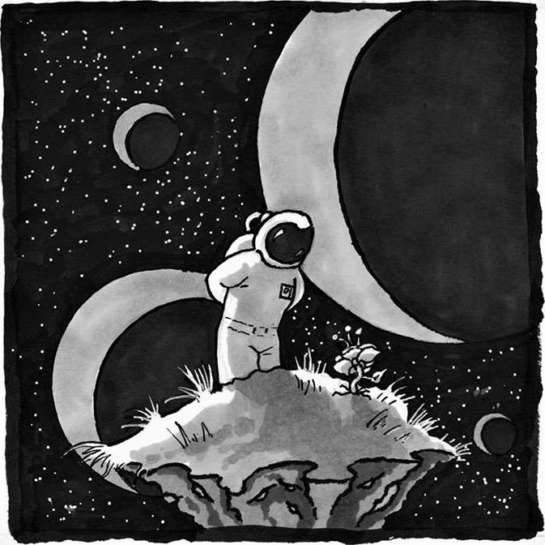
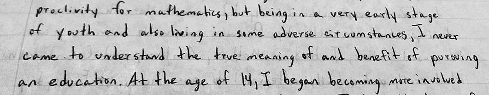
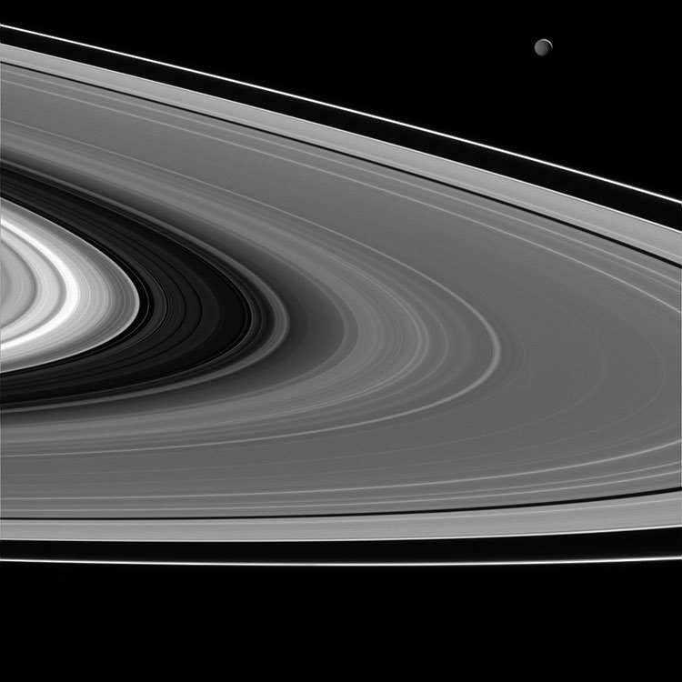
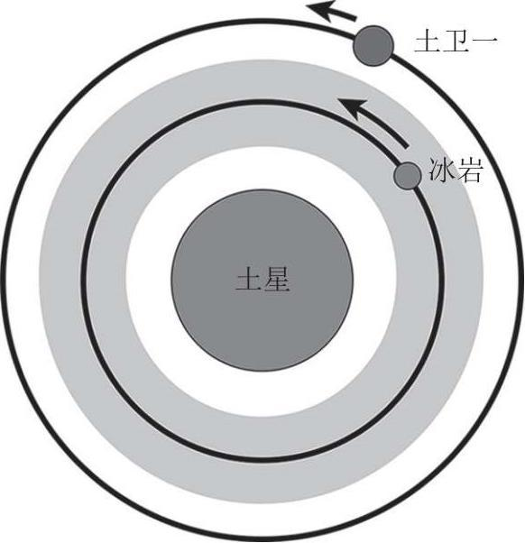
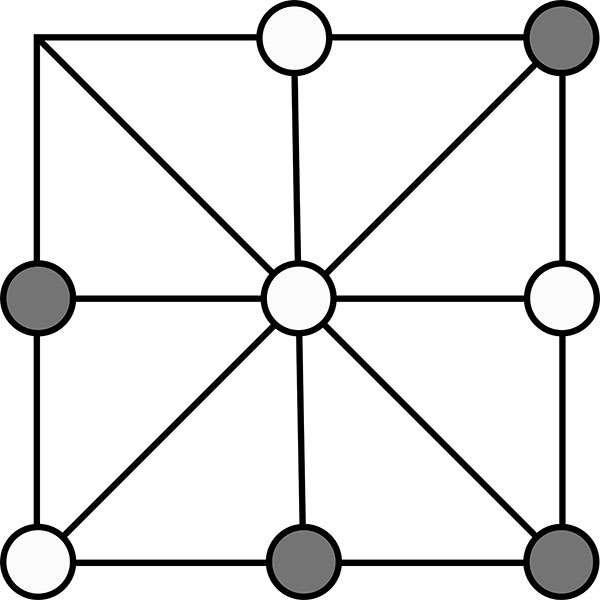
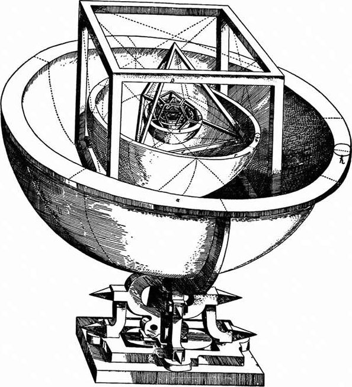
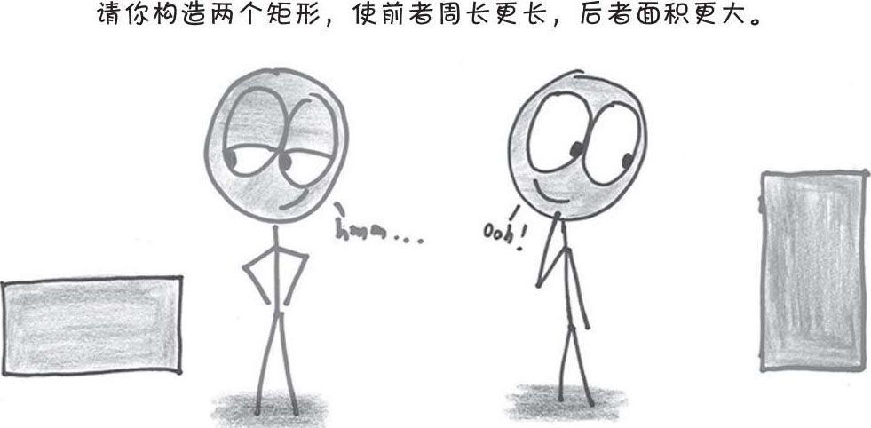
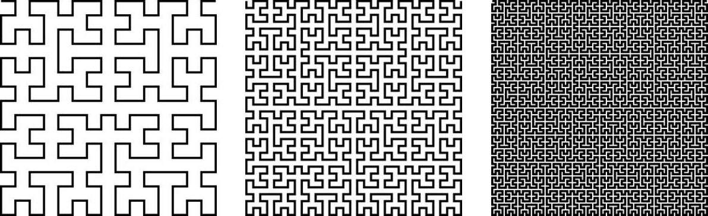
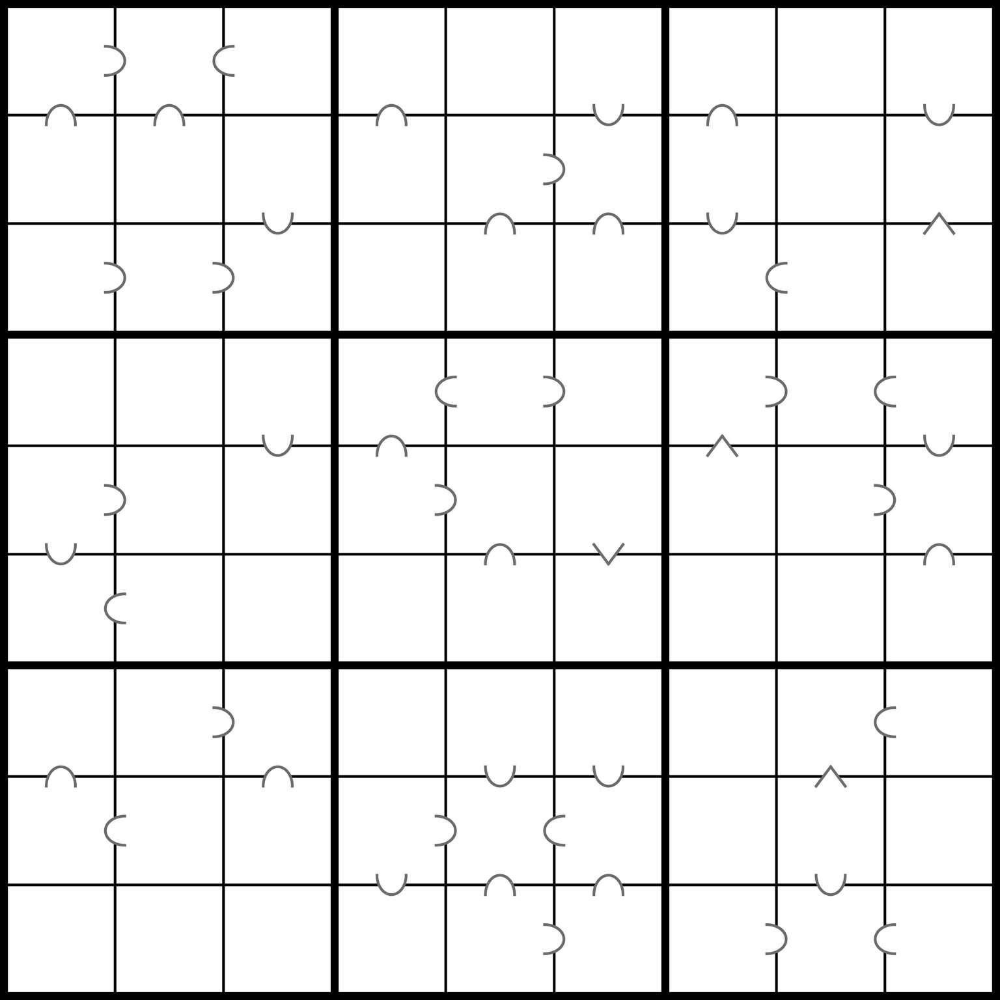

2 探索
这就好比在密林之中迷失了方向，你不得不穷尽毕生之所学试图另辟蹊径，若是恰好博得了幸运女神的青睐，你便有机会逃出生天。
——玛丽安·米尔札哈尼
（Maryam Mirzakhani）1
世人眼中的数学通常都是管中之豹，其实背后还藏着数不尽的奇异和玄妙。
——郑乐隽
（Eugenia Cheng）2
在数学这条道路上，我的朋友克里斯托弗·杰克逊绝对算得上是一名勇往直前的探索者，尽管身处监狱受到诸多限制，但他的想象力却从未固守一隅，故步自封。他好奇心强，善于创新，无所畏惧，坚持不懈，面对精妙难题往往乐在其中，上下求索的艰辛对他来说反而是一种难得的享受。
过去的几年里，克里斯从未停止对数学世界的探索，视野也越来越开阔，那些全新的数学知识令他豁然开朗，让他意识到除了之前学到的那些枯燥乏味的内容，数学中其实还存在着很多令人眼前一亮的领域。尽管牢狱生活格外艰苦，但他对数学的热爱与认知并没有被消磨，反而与日俱增。能够在千里之外见证他的蜕变，实在令我感慨万分。

克里斯从小就过得不太如意。他出生于佐治亚州奥古斯塔市的工人阶级社区，在姨母和祖母的帮助下，他的母亲得以将他抚养成人。克里斯未满两岁的时候，吸毒成瘾的父亲就在十八轮大卡车的轰鸣声中悲惨丧生，这导致克里斯对父亲没有任何印象。尽管克里斯的人生中也曾出现过光明温暖的一面——母亲时不时地给他讲述书中的趣事，在他心中悄然埋下了一颗热爱读书的种子——但各种黑暗消极的因素也在不断阻碍他的健康成长。最终，就像他写给我的第一封信中所说，他在青少年时期不幸沦为一名瘾君子，从此走上了违法犯罪的道路。
2013 年 11 月，我收到了一封来自松节监狱的信（见下图）。起初我还有些谨慎，不过那工整的字迹、诚挚的语言很快便勾起了我的好奇心。我甚至可以想象出他写信时字斟句酌、全神贯注的样子。尽管我和他从未见过面——我对他的了解全部来自他笔下的只言片语——但实际上一个鲜明的形象早已跃然纸上，字里行间的细节或许就是他本人的真实写照。读懂了他对艰难过往的省思、对自身未来的期冀、徜徉书海只求在数学之路上有所进步的那种执着与热爱之后，我的内心受到了深深的触动。不过可惜的是，我们学校有些爱莫能助，无法为他提供远程课程的学习。

算起来，通过这些断断续续的书信，我和克里斯相识已经 6 年有余。除了两人都感兴趣的数学问题，我们也会聊各自的生活琐事。征得克里斯的同意之后，我决定摘录一些书信片段分享给大家，他的见解、经历和我想展现的主题完全契合，在本书中恰恰会起到一种画龙点睛的作用。不过大家不要误会，这并不是关于一个数学家在千里之外帮助狱中囚犯学习数学的故事，相反，克里斯才是故事的主人公，我真正想呈现给大家的是克里斯在自我认知上的根本转变，以及对数学之道的全新理解。同时，他的真知灼见和经历体悟也让我受益良多。沉淀消化之后，我决定借此书阐明数学与人生幸福之间的关系，好让大家有更充分的理由去相信每个人都能从数学中找到属于自己的价值。
和克里斯一样，我也是一名数学探索者。尽管我们路途相殊，但沿途收获却有几分相似——对数学世界的不断探索唤醒了我们无穷的想象力。孩提时代，我曾痴迷于天上的繁星。由于我家在得克萨斯州一个偏远小镇，离大城市相当远，夜空中那些最为暗淡的星星也无处藏身。我央求父母给我买一个望远镜，可惜家境的窘迫无法让我如愿。我只好把这份好奇转移到天文书籍之中，借由文字如饥似渴地描绘着我对宇宙和太空的幻想。我想成为一名宇航员，翱翔太空，探索宇宙，寻找光怪陆离的新世界，发现奇形怪状的新生命。可惜后来我才知道，哪怕是离地球最近的恒星，路上所花费的时间也是人类寿命难以企及的，而且我不得不抛弃亲朋好友忍受漫长的孤独。一想到这里，童年这份令我心驰神往的梦想便瞬间化为泡影。不过这并没有磨灭我对太空的迷恋，只是让我把狩猎对象从天文书籍换成了科幻小说，沉浸于《日暮》（Nightfall，阿西莫夫著）这样的精彩故事之中难以自拔。更妙的是，在小说中我可以摆脱时空的束缚，在脑海中亲自造访阿西莫夫笔下那个拥有六个太阳的文明世界，和主人公们一起等待千年一遇的夜幕的降临。
20 世纪 70 年代末 80 年代初，先驱者号和旅行者号探测器相继升空，开始对太阳系进行深度探索，我儿时的想象力似乎也随之飘向了远方。利用这些探测器，科学家们第一次近距离捕捉到了木星卫星和土星环的影像。为此，科学家们付出了多年的汗水，贡献了无与伦比的智慧，考量了探测器可能遭遇的各种情况，制订了完备的航行规划。最终，凭借这些素不相识、未曾谋面的科研人员创造出的探测成果，身在得克萨斯州南部小镇的我有幸得以间接瞥到了浩瀚宇宙的“冰山一角”。报纸上刊登的那些旅行者号照片总能让我爱不释手，目不转睛。

沐浴在土星光环下的土卫一（Mimas）。土星反射的太阳光照亮了土卫一。
卡西尼环缝（Cassini division）是土星环中最大的一个环缝，位于图中左侧
（图片来源：美国国家航空航天局，喷气推进实验室-加州理工大学，太空科学研究所。2015 年 2 月 16 日由卡西尼号飞船拍摄）
我们可以在这些天体的运转规律中发现数学的身影。土星环围绕在土星周边，位于赤道平面之上。从远处看，它们就像一条条静止不动的环状绸带，但事实上它们的主要成分是巨型岩石（小卫星），这些岩石内含有大量水冰，在重力的影响下绕土星旋转。天文学家伽利略在望远镜的帮助下于 1610 年成为历史上第一个观测到土星环的人。当时他并不确定自己看到的是什么，便打趣地将其称为“耳朵一样的东西”。1后来在其他天文学家的努力下，人们终于确定，这是土星的环状结构，环与环之间存在许多空隙。在旅行者号探测器的帮助下，我们掌握了环状结构的精密细节，比如高密度波纹和低密度波纹的分布模式，酷似老式黑胶唱片上的凹槽。
后来我了解到，某些环状结构其实可以用数学规律来解释。所有与土星距离相等的冰岩绕土星公转所需要的时间相等，换句话说，它们具有相同的轨道周期。冰岩距离土星越远，受到的引力就越小，相应的轨道周期就更长，速度就更慢。为了更加直观，我们可以把这些土星环想象成田径跑道。和外圈的运动员相比，内圈的运动员会更占优势，单圈长度更短。
当冰岩轨道周期和土星卫星轨道周期呈现整数比的时候，我们就能看到一些较为特殊的现象。假设现在有一块冰岩在内圈运动，还有一颗卫星在外圈绕土星运转，在内圈的冰岩跑完两圈时在外圈的卫星刚好跑完一圈。也就是说，冰岩每运动两个周期就能在同一个位置上和卫星擦肩而过。
就是在这每一次擦肩的瞬间，卫星对冰岩的引力作用最强。由于每次引力极值都发生在同一个位置，二者之间的引力强度便会越来越高，逐渐让冰岩轨道产生扰动。这很像你在后面推一个小孩荡秋千，你的推力和秋千同步了，孩子就能荡得更高。由于和土星距离相同的那些冰岩具有相同的轨道周期，它们都有偏离轨道的趋势，这就是所谓的共振效应。这种效应强到一定程度时就会迫使环状结构之间产生裂缝。

土星内轨道上的冰岩即将超越土卫一。
如果冰岩总是反复在同一位置上超越土卫一，那么日积月累之下，土卫一的引力作用就会迫使冰岩逐渐偏离轨道
土卫一附近存在一个冰岩轨道，二者轨道周期比例恰好为 2∶1，相应的共振催生了最大的土星环缝，也就是宽达 3000 英里[1]的卡西尼缝（Cassini division）。其实，更小的整数比（例如 3∶2 或者 4∶3）也会形成类似的共振效应，只不过没有前者那么显著，最终的效果与其说是裂隙，不如说是波纹。卫星与冰岩之间的共振效应，可以解释土星环中的许多特征。2这些冰岩在引力的作用下翩跹于轨道之上，将冰冷的数字（前面那些简分数）呈现为一支支美轮美奂的舞蹈！运用数学和想象力进行一次小小的探索，就可以洞悉 9 亿英里外天体的奥秘，对像我这样的孩子来说，简直没有比这更令人着迷的事情了。
虽然目的地从真实的浩瀚宇宙变成了缥缈的思想之海，但总的来说，太空探险和数学探索其实有很多相似之处：站在起点根本看不清终点的模样，你不得不派出各种探测器去验证自己的理论。之后你会被沿途的迷境所吸引，被疑问所激励，披荆斩棘，勇往直前，最终凭借推测和演算，你跨越了时空的障碍和身体的束缚，在千里之外弄懂了天涯海角的奥秘，挖掘出了隐藏在事物背后的真理。由此可见，数学研究的根本就在于探索和理解。
遗憾的是，有很多人觉得数学只是简单的算术，还有不少人认为数学是一种传承已久的、令人头大的高级工具。在他们心中，数学和探索根本沾不上边。
的确，我们在学校学到的数学知识可以帮助我们打下坚实的基础，为以后进一步的探索做好准备。不过话又说回来，一边学习一边探索不是更好吗？为什么一定要等到将来呢？这就好比打篮球，在进军职业联赛之前一场比赛也不看，一场实战也不打，每天就学习篮球规则、练罚球。3你一直都在准备，却永远都准备不好。
探索不仅是人类内心深处的潜在渴求，也是人类繁荣的标志。探索数学不需要家财万贯，也不用天资过人，你随时随地都可以开动脑筋，踏上征程——无论是身处监狱，还是家住小镇，哪怕是藏身天涯海角都不会有什么影响。不必惊奇，每个时代、每个国度都少不了在数学之路上诚心求索的身影。游戏就是一个最好的例子，尤其是策略游戏，博弈过程中往往会涌现出各种奇妙的数学问题，将探索精神展现得淋漓尽致。
Achi是一种流行于西非加纳阿散蒂人之间的双人策略游戏。游戏双方各持 4 枚棋子，交战于一张 3×3 的网格状棋盘（由 3 条横线、3 条竖线、两条对角线构成，9 个交汇点构成 9 个空位）之上。乍一看跟井字棋很像，但细节上又有着微妙的不同。游戏开始后，两名选手轮流将自己手中的棋子放在心仪的空位上，最先将 3 枚棋子连成一条直线的人获胜。如果 8 枚棋子落定，双方均未连出直线，那么棋盘上必然还存在一个没有棋子的空位，此时对局进入第二阶段，双方轮流将己方棋子沿直线移动到剩余的那个空位上，但不允许跳棋，率先连成直线的一方将赢得比赛。4

此时 8 枚棋子全部落定，胜负未分，游戏进入第二阶段，玩家要轮流将自己的某个棋子移动到空位上，直到有人连出直线获得胜利
以上便是Achi的标准游戏规则，虽然看起来条理清晰，其实规则仍有很多模糊之处。[2]比如，第二阶段某人 4 枚棋子全部卡住动弹不得怎么办？是不是只要双方积极对弈（决不放弃任何赢得比赛的机会）就能避免棋子卡住？就算棋子没有卡住，难道选手就不能跳过此回合选择静观其变吗？数学分析能够帮你解答这些问题，告诉你如何抉择才能让对局变得更加扣人心弦。既然存在这么多特殊情况，我们不禁会产生这样的疑问： Achi会不会一直玩下去，陷入无人能够取胜的僵局？游戏是否存在某种必胜策略（无论一方如何出招，另一方都能获取最终的胜利）？能否把交战双方的棋子从 4 枚减少到 3 枚？能否重新设计棋盘，创造出更有趣的玩法？
能够提出这样的问题，说明你已经是数学探索者，试图寻求游戏万般变化所依据的数理逻辑。就像太空探索一样，你派出一个个探测器，想要穿过遮掩在最终答案之前的重重迷雾。事实上，数学推理本身也是在“千里之外”寻找答案，因为你不必亲自参与到每一盘对局当中，只需弄懂规则便可推演出各种情况。
井字棋游戏中存在一个被称为“策略盗取”（strategy-stealing argument）的聪明办法，可以证明后手玩家不可能拥有必胜策略。其实我们可以反过来思考：假如后手玩家真的拥有必胜策略，那么先手玩家就可以无视自己的第一步棋，把自己变成真正的后手，从第二步棋开始完完整整地照搬对手的策略，以彼之道还施彼身。如果在“抄作业”的过程中，先手玩家发现自己将要落子的地方已经有了一枚棋子，那么这一回合他就可以随便下——这一步棋算是额外多给的一个机会，而对井字棋而言，多一次机会只会增加他的获胜概率，绝不可能拖了他的后腿。总而言之，假如后手玩家真的拥有必胜策略，那么最终会出现两名玩家都有必胜策略的矛盾局面，这显然是不可能的，说明我们之前的假设根本不成立。这样一来，先手玩家就必然拥有一种策略让自己立于不败之地，要么胜利要么和棋。没错，数学就是这么不可思议——我们连一局井字棋都没下，就成功推演出相当关键的结论。
每种文明都流传着带有自身特色的策略博弈游戏。5换句话说，每种文明都能催生“数学探索者”，因为策略思维本身就是一种数学推理。想要继承这种文明遗产，策略游戏是一个相当不错的切入点，你可以找一个自己感兴趣的、和文化历史背景相符的游戏，在对局中锤炼自己的思考能力，发散自己的思维，挖掘出更多有价值的问题。
数学的探索始于勇敢提问。成为一名数学探索者的唯一要求，就是拥有提出“为什么？怎么会？我这样试一下行不行？”这类问题的能力。毫无疑问，每个人在孩童时代都是“好奇宝宝”，可惜很多人在成长过程中逐渐失去了提问的能力。究其原因，或许是没有受到正确的教育指引，只知死记硬背，却没有深入理解，学到的永远都是标准答案，从来没有人告诉他们这些答案为什么行之有效。长此以往，这些人就以为标准答案等同于唯一答案，再也不会主动探索问题的解决办法。由此可见，我们必须时刻警醒自己，数学的本质是探索，而不是记忆。在不熟悉的问题面前，数学记忆者必然束手无策，而数学探索者会主动求变，见招拆招，曾经提出的千千万万个问题此时成了自己最坚实的倚靠。有经验的数学老师会循循善诱，培养我们的探索精神。阮芳（Fawn Nguyen）就是这样一位数学教师，她曾对同行们提出过一个倡议：“评判教学质量的依据，不应看学生交出了怎样的答卷，而应看学生提出了怎样的问题。”6
探索可以激发人们的想象力，这是因为为了得到答案，你通常会想方设法挖掘更多的可能性。以德国天文学家约翰内斯·开普勒（Johannes Kepler）为例，当年为了解释六颗行星之间特定轨道距离的成因，他在著作《宇宙的奥秘》（Mysterium Cosmographicum）中提出了这样一个理论：6 个行星轨道所在的球面，实际上由 5 个柏拉图立体（即正四面体，正六面体，正八面体，正十二面体和正二十面体）以内切或外切的方式环环嵌套而成。

《宇宙的奥秘》中开普勒描绘出的太阳系模型
事实上，这个理论和真实情况的契合度并不理想，因为它压根儿就不对。但我们并不能因为错误就否定开普勒过人的想象力！头脑风暴必然会产生异想天开的错误结论，不过这并不打紧，因为错误的思想松动了正确的思想从中生长的土壤。处理数学难题也是一样的道理，不迈出第一步就永远看不到成功的可能。哪怕是那些从事数学研究的专业人员，面对难题时可能也会低头苦笑，然后试探性地问问同事：“要不先求一下X或Y ？”尝试之后才发现这个方案行不通，不过这次尝试仍然具有实际意义，因为它能帮助我们开拓思路。
探索可以激发人们的创造力，这是因为探索过程中难免会冒出新的问题，迫使我们更新手中的工具。比如人类的探月之旅就催生了各种发明创造，这些创造后来逐渐走进了人们的日常生活，其中包括无线设备、记忆海绵、建筑隔热、防滑镜片等常见工具和技术。同理，基础数学研究往往也会（通常都是很多年以后）带来令人赞叹的实际应用。比如对素数本源的探究促进了密码学的发展；对拓扑学纽结理论的探索如今应用到了蛋白质折叠规则中，拉东变换（Radon transform）原理逐渐成为CAT扫描技术的数学原理。7总之，无论是那些奇思妙想的数学趣题，还是精心设计的数学难题，哪怕是简简单单的小问题，都能让你的创造力得到一定程度的拓展。这些问题成了良师益友间的课堂分享、数学题集中的神来之笔、数学竞赛中的“必争之地”、数学探索者们的日常话题。8英国数学教师兼科普作家本·奥尔林（Ben Orlin）曾在令人拍案叫绝的《欢乐数学》（Math with Bad Drawings）一书中分析了什么是枯燥乏味的问题，什么是值得探索的问题，以及二者之间的区别。9他举了这样一个例子：
现有一个长 11 米、宽 3 米的矩形，请你求出它的面积和周长。
这个问题相当无聊，因为它把面积和周长两个有趣的概念硬生生地变成了数学公式的计算，根本是捡了芝麻丢了西瓜，让人摸不清数学概念的真实意义。本·奥尔林在书中这样表示：“这只是将两个数字简单相乘，没能让你明白‘面积’实际上指的是填满这个矩形到底需要多少个 1×1 大小的正方形。”即便你做了 20 道类似的数学题，你对几何学仍然可能一窍不通。图中的问题才是一个更有趣的、更具有探索价值的问题。

《欢乐数学》中的插图
按照作者本·奥尔林自谦的说法，这是一张潦草的涂鸦
的确，这样提问就好多了，趣味性可以说是直线上升，而且能够帮助你深度理解矩形的本质。奥尔林表示，这个问题还可以继续“进化”——“请你构建两个矩形，使前者的周长是后者的两倍，而后者的面积是前者的两倍。”跟这样的好问题较劲，可以培养属于你自己的认知方式，形成属于你自己的解题思路。这才是最棒的学习体验。
探索可以培养我们对赋魅的期待。在出人意料的事物，尤其是在怪谈奇闻和神迹奇观面前，没有任何一位探险家能够抑制住自己内心的激动和兴奋。这也可以解释我们为什么会被迷雾中的旅行所诱惑，被陌生的山洞所吸引，被海底的怪物所蛊惑——那些深海中的阴影到底是什么东西？数学当中也存在着同样令人期待和渴望的“怪兽”，空间填充曲线（space-filling curve）便是其中之一，这是一条能遍及正方形内每一点的曲线。尽管这条曲线无法用画笔绘制出来，但数学可以证明它的确存在。这种怪异的曲线如今已经被科学家应用到了计算机科学和图像处理等领域。

图中这类极致形态的曲线就是空间填充曲线，每次变化之后，它们都会以更蜿蜒曲折的方式穿过给定的平面区域。
没错，数学中确确实实存在这种神奇的极限形式
另一只“怪兽”叫作巴拿赫-塔斯基悖论，它证明了一个令人难以置信的结论：一个实心球可以切分成 5 份，然后重新组合成两个和原实心球同样大小的新实心球。肯定有人会问：如果真这么厉害，你为什么不拿金球去分割呢？答案很简单——真实空间不能像理想化空间那样可被无限分割——现实事物的本质与数学模型之间存在一定差距。如果能够以探索的眼光来审视生活，你就会发现每一道风景背后都埋藏着不为人知的宝藏，你需要做的就是锻炼自己的创造性思维，推测出宝藏的位置，然后把它们挖掘出来。
琳达·古戸（Linda Furuto）是一名数学探索者，同时也擅长唤起其他学习者的探索精神。她在夏威夷瓦胡岛北海岸度过了自己的童年，每逢闲暇时光就会去叉鱼、潜水、游泳、冲浪，一度看不到数学的意义，学起来也感到格外吃力。不过随着年龄的增长她渐渐发现，无论是海洋动力学还是潜水极限时长的优化，其实身旁到处都能看到数学的应用。如今，作为夏威夷大学马诺阿分校的数学教育学教授，她的主要工作是帮助学生发掘文明史和数学之间的关联，让他们意识到以数学探索者的眼光去审视世界不仅有利于加深对海洋生物学的理解，还能促进对海洋生态环境的保护——线性函数可以模拟藻类侵入对珊瑚礁的危害，矩阵可以描述海洋残骸的富集过程，二次方程可以规划有限岛屿资源的可持续发展之路。她曾亲自带领学生乘坐欢乐之星号（夏威夷语为Hōkūle‘a，一艘隶属于波利尼西亚航海协会的双船体独木舟）去体验夏威夷原住民在太平洋海域任意驰骋所仰仗的传统航海术。10这种航海术以对天象和自然细致入微的观测为基础，不借用任何设备就可以随心远航。在过去的 40 多年中，欢乐之星号已经在海上航行了超过 16 万海里，其中包括著名的Mālama Honua（意为“保护我们的地球”）环球航行（始于 2013 年），这次航行彻底消除了人们对这项古老航海术的怀疑。11此外，琳达·古戸还扮演了见习领航员和教育专家的角色，她会引领学生去探索蕴藏在海上风动力学和航海力学中的三角学与微积分学，让学生们明白这些东西为什么比死记公式重要得多。
课本上的内容非常重要，学生们必须将它们牢记在心，这没问题，我同意，可是还有一件事也同样重要，那就是让学生们意识到他们的祖先在不借助任何现代航海工具的前提下，成功地在太平洋海域航行了好几千海里——他们借助的是太阳、月亮、星星、海风、潮汐、候鸟的飞行规律等自然现象。既然他们能够在遥远的过去开辟出一条令人难以置信的海路，我相信，无论是理论上还是实践上，无论是在教室里还是在海面上，学生们的表现一定不会逊于古人。12
其实这些古人在开辟航线的同时也扮演着数学探索者的角色，他们凭借专注的研究精神、缜密的逻辑推理、过人的空间直觉去解决在当年的科技文化背景下所遭遇的重重困难。无论何时何地，不论何种文明，我们总能发现数学探索者的身影。琳达·古戸也得出了一个重要的结论，那就是那些和学生们拥有同一段文明历史背景的数学探索者，必然能激发学生们对数学的认同感，而自己恰好可以在二者之间搭梁架桥，鼓励学生们去主动拥抱数学。
你有没有遇到过绞尽脑汁仍旧不得要领的难题？有没有遇到过难以征服的惊涛骇浪？是不是也曾想弄懂生命长河中的冥冥天意？没错，我们天生就有求知的欲望和推理的能力，每个人都是一名数学探索者。我们遥望深空，幻想自己能够追云逐日，在星河之中探访世外仙境，那里必定有各种超越想象力和创造力的天地瑰宝在等着我们。

------“整除”数独------
数独是一种需要不断探索才能解开的谜题。图中这个特殊的数独玩法来自《全裸数独》（Naked Sudoku），[3]“全裸”指的是该数独不提供任何已知数字，看似天马行空，其实解法唯一。
游戏规则：将数字 1~9 按规律填入 81 个空位，使得每行、每列、每个小九宫格中，数字 1~9 刚好各自出现一次，和传统数独规则一样。不同之处在于，在每个小九宫格中，如果相邻的两个数字刚好存在整除关系，那么它们的边界就用符号“⊂”来标记。比如A小格中的数字正好可以整除B小格当中的数字，我们就说A⊂B。除此之外游戏中还有另一个符号“>”，它就是普通的大于号，没什么特殊含义。
游戏攻略：你可以先想想各个数字之间的整除关系。比如 4 整除8，故 4⊂8；1 整除 3，3 整除 9，故 1⊂3⊂9。数字 1 通常比较容易放置，因为它可以整除任一数字。
弗朗西斯先生，您好：
感谢您的回信，也感谢您能在百忙之中抽出时间来阅读我的信件，我能从回信中看出您的斟酌和思考，感受到那份友善和慷慨。没错，我还在继续研习数学：数学让我的生活变得充实而有意义，让我无论是在当下还是未来都有了奋斗的目标，让我得到了灵魂的升华和精神的满足，同时也让我的生命有了全新的意义和希望。我逐渐明白，只有不忘初心，持之以恒，我们才能活成理想中的模样。
现在我对数学知识的了解仅限于《微积分Ⅱ》的水平，还没正式学习过数论、代数系统的应用或其他性质类似的科目。目前手头这本《高阶数论》让我感到有些吃力，由于对数论了解较少，掌握不精，虽然付出了大量的汗水，最终也没能学到太多东西。随着个人的成长和思考的累积，我发现我（像我这样的人似乎不多）对抽象概念的兴趣越来越浓厚。不过话说回来，作为科学探索和科技进步的基石，数学本身就是一个集理论抽象和实际应用为一体的基础学科，正是这些迷人的理论和广泛的应用让我感到如痴如醉，乃至废寝忘食。
克里斯
2014 年 4 月 16 日
[1] 1 英里≈ 1.6 千米。——编者注
[2] 截至目前，我还没找到任何可以完美填补游戏中各种漏洞的权威资料。
[3] 参见菲利普·莱利，劳拉·塔曼，“冻脑谜题”，《全裸数独》（纽约：Puzzlewright，2009），第 125 页。